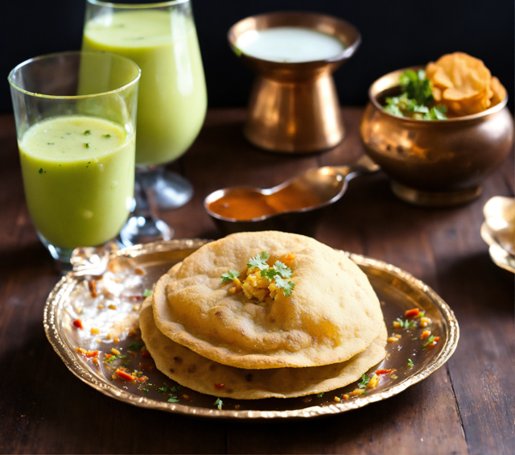

Roti Canai/Paratha (Indian Pancake)

Description
Roti canai, or roti prata, also known as roti chanai and roti cane, is an Indian flatbread dish found in several
countries in Southeast Asia, especially Brunei, Indonesia, Malaysia, Singapore, and Thailand.
It is usually served with dal or other types of curry but can also be cooked in a range of sweet or savoury
variations made with different ingredients, such as meat, eggs, or cheese.
Ingredients
- ¾ cup warm water
- 1 teaspoon salt
- 1 pinch white sugar
- 4 ¾ cups all-purpose flour
- 3 ½ tablespoons clarified butter (ghee)
- 1 egg
- 1 teaspoon water
- 2 tablespoons ghee (clarified butter), divided
Directions/Steps
- Mix warm water, salt, and sugar together in a bowl. Put flour in a large mixing bowl; work in 3 1/2
tablespoons ghee using your fingertips.
- Beat egg and 1 teaspoon water together in a bowl; add to flour mixture. Gradually mix warm water mixture
into flour mixture while kneading until dough becomes soft and pliable. Form dough into balls and let rest
in a well-oiled bowl, 2 to 3 hours.
- Working on a flat greased surface, take a dough ball and flatten it using the heel of your palm to make a
paper-thin circle. Spread 1 teaspoon ghee inside it. Fold the edges together to make roti into a square.
Repeat with remaining dough.
- Heat about 1 tablespoon ghee on griddle or in a skillet over medium heat; cook roti until browned, 1 to 3
minutes per side.